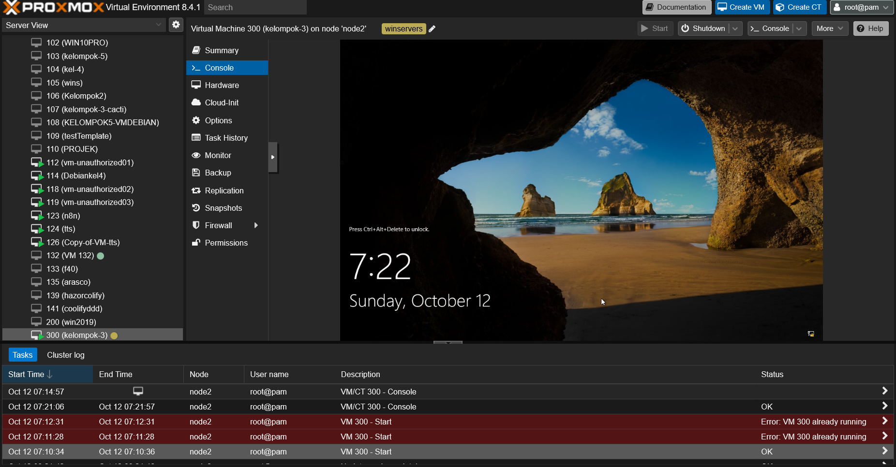

Projects

Instalasi Web Server Menggunakan Nginx pada Linux Server
Saya melakukan instalasi Nginx pada server Linux untuk membuat website yang cepat dan andal.

Aplikasi Ekstraksi Rekursif Otomatis
Mengembangkan aplikasi GUI Python untuk ekstraksi arsip rekursif yang efisien, dilengkapi dengan fitur: auto-resolve sandi dari Telegram, auto-rename berbasis mapping, dan sistem logging yang dapat difilter (Info Penuh/Error) untuk akurasi pemrosesan file.

Install Windows Server on Proxmox
Menginstal dan mengonfigurasi Windows Server di Proxmox secara efisien, mencakup pembuatan VM, pemasangan driver VirtIO, integrasi Guest Agent.

Instalasi Jaringan LAN
Melakukan instalasi dan konfigurasi jaringan LAN untuk praktikum di SMK Telkom Sidoarjo.

Uji Terima
Melakukan pengecekan apakah pembangunan penambahan telah sesuai dengan standart perusahaan.

Web Tunnel Server Configuration
Konfigurasi server tunnel untuk terhubung dengan internet filtering menggunakan Ubuntu dan Nginx server.

Dashboard Absensi PKL Menggunakan Looker
Membuat dashboard visualisasi absensi sebagai monitoring sebuah unit